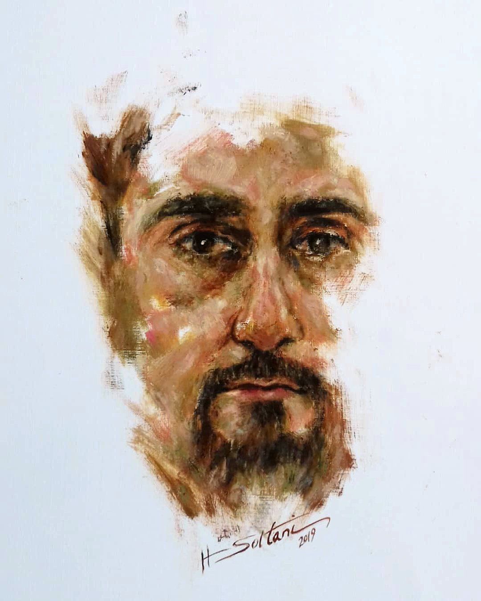
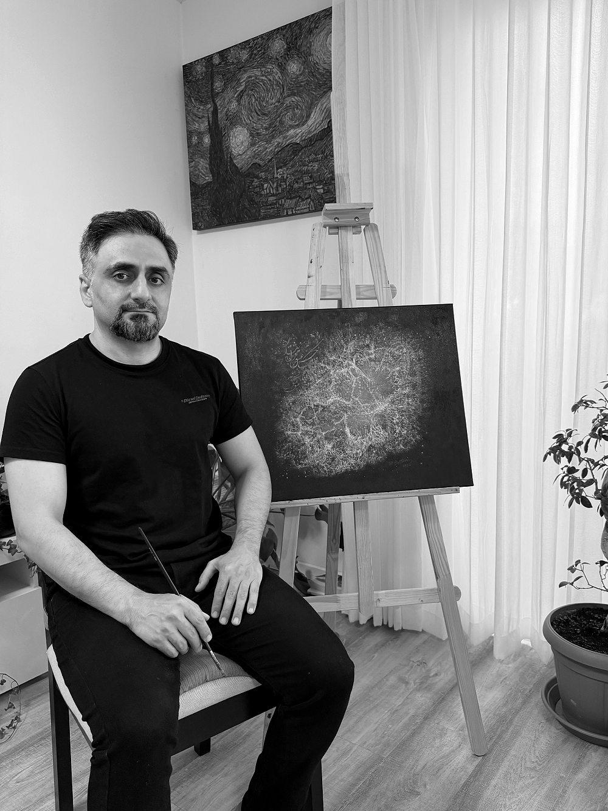
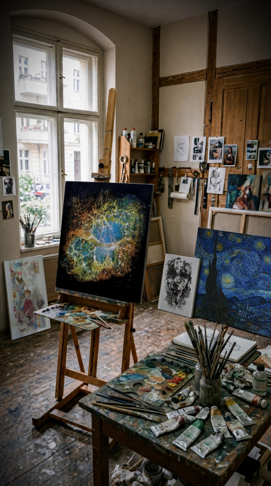

Berlin-based contemporary painter working across oil painting, mixed media and Persian calligraphic elements. Original works form the centre of the practice; hand-painted studies after historical masterpieces and bespoke reproductions are developed as a distinct parallel strand. In Berlin lebender und arbeitender zeitgenössischer Maler mit Schwerpunkt auf Ölmalerei, Mixed Media und persischen kalligrafischen Elementen. Originalwerke bilden den Mittelpunkt der künstlerischen Praxis; handgemalte Studien nach historischen Meisterwerken und individuelle Reproduktionen entstehen als eigenständiger paralleler Arbeitsbereich.


My artistic practice centres on original works exploring inward movement, memory, devotion and transformation, as well as the relationship between calligraphic gesture, material and space. Persian script appears not only as language, but also as rhythm, movement and visual structure.
Alongside this practice, I undertake hand-painted studies after historical masterpieces as a form of technical research into colour, light, brushwork, layering and surface. Selected reproductions are also available as individually commissioned works.
Born in 1981 in Iran. Lives and works in Berlin, Germany. With more than fifteen years of experience in oil painting, pastel, charcoal, and mixed media, my work bridges classical techniques and contemporary artistic practice. Geboren 1981 im Iran. Lebt und arbeitet in Berlin, Deutschland. Mit mehr als fünfzehn Jahren Erfahrung in Ölmalerei, Pastell, Kohle und Mischtechnik verbindet meine Arbeit klassische Techniken mit zeitgenössischer künstlerischer Praxis.
“I believe painting is both an act of creation and an act of observation. Through original works and the study of historical masterpieces, I seek to understand how light, colour, form, and emotion continue to speak across time.” „Ich glaube, dass Malerei sowohl ein Akt der Schöpfung als auch ein Akt der Beobachtung ist. Durch originale Werke und das Studium historischer Meisterwerke versuche ich zu verstehen, wie Licht, Farbe, Form und Emotionen über die Zeit hinweg sprechen.“
Each work follows a process adapted to its materials and artistic intention. Oil paintings are developed through preparation of the support, underpainting, layered colour, glazing and revision. Mixed-media works may incorporate paper, printed text, textile elements, transferred imagery and relief-like surfaces. A final varnish is applied only after sufficient drying and where appropriate.
Stretching premium linen, sizing and applying an oil ground.Aufspannen von Premium-Leinen, Grundierung und Ölgrund.
Monochrome study of value, structure and light.Monochrome Studie von Wert, Struktur und Licht.
The timeframe depends on size, complexity and drying requirements and is agreed before the commission begins. Der Zeitrahmen richtet sich nach Format, Komplexität und erforderlichen Trocknungszeiten und wird vor Beginn des Auftrags vereinbart.
Detail, varnish and signatureDetails, Firnis und Signatur

Each reproduction is painted entirely by hand in oil. No printing or digital transfer is used in the finished painting. The aim is not mechanical duplication, but a close material study of the original work’s colour relationships, brushwork, texture, layering and visual character.
Commissioned reproductions are discussed individually according to the selected artwork, dimensions, materials and intended setting. Progress documentation and approval photographs are provided during the process.
Jede Reproduktion wird vollständig von Hand in Öl gemalt. Im fertigen Gemälde werden weder Druckverfahren noch digitale Übertragungen verwendet. Ziel ist keine mechanische Vervielfältigung, sondern eine präzise materielle Auseinandersetzung mit Farbverhältnissen, Pinselduktus, Textur, Schichtung und visuellem Charakter des historischen Vorbilds.
Auftragsarbeiten werden entsprechend dem ausgewählten Werk, dem gewünschten Format, den Materialien und dem vorgesehenen Ort individuell abgestimmt. Während des Arbeitsprozesses werden Fortschrittsdokumentationen und Abnahmefotos bereitgestellt.
Brush to canvas, from first stroke to final varnish.Pinsel auf Leinwand, vom ersten Strich bis zum letzten Firnis.
Tightly woven Belgian linen, sized and oil-primed by hand.Eng gewebtes belgisches Leinen, von Hand grundiert.
Indirect oil method, sfumato, glazing — true to each master.Indirekte Öltechnik, Sfumato, Lasuren – treu zum jeweiligen Meister.
Winsor & Newton and Gamblin oils, conservator-grade varnish.Winsor & Newton und Gamblin Ölfarben, restauratorischer Firnis.
All materials are selected for durability, colour stability and long-term preservation.Alle Materialien werden für Haltbarkeit, Farbstabilität und langfristige Konservierung ausgewählt.
A selected record of solo and group exhibitions and studio milestones.Eine Auswahl von Einzel- und Gruppenausstellungen sowie Atelier-Meilensteinen.
For original works, exhibition and curatorial inquiries, or bespoke hand-painted reproduction commissions, please use the form below or contact me directly. Für Anfragen zu Originalwerken, Ausstellungen und kuratorischen Projekten sowie zu individuell angefertigten handgemalten Reproduktionen nutzen Sie bitte das folgende Formular oder kontaktieren Sie mich direkt.